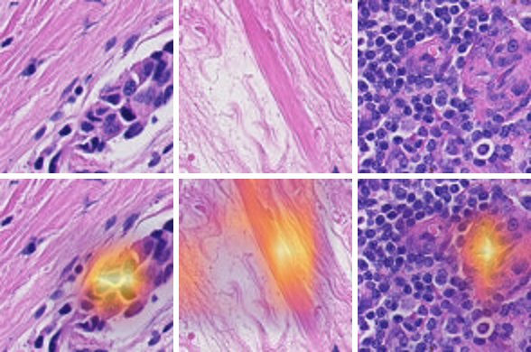

Project report · Personal computer vision project
Tumor Classification Under Hospital Shift
I trained a classifier that finds tumor tissue in lymph node histology patches, then measured how well it works at a hospital it has never seen. This is the story of how the project went: the plan, the engineering problems, the results, and the experiments.
- Author
- Yusuf Malik Durmus
- Data
- Camelyon17-WILDS
- Stack
- Python · PyTorch · torchvision · Weights & Biases · ONNX Runtime · onnxruntime-web
Research demo, not a medical tool. The model and the demo below are for learning about distribution shift. They must not be used for diagnosis.
Try it
Pick an image. The model, an 11 MB int8 network, runs locally in your browser. The samples are random within each outcome (8 correct tumor, 8 correct no tumor, 4 missed tumors and 4 false alarms). The dashed box marks the region that defines the label.
- Prediction
- –
- True label
- –
- Outcome
- –
- Python run
- –
- Time
- –
Choose a patch to load the model (11 MB).
The probability is the model's estimate that the patch contains tumor. Grad-CAM shows where the evidence for the predicted class was; it was computed in advance from the float32 model.
The short version.
- Color augmentation closed most of the gap between known hospitals and the unseen one: hospital 2 accuracy rose by 7.5 points, and the model became far less overconfident.
- Which validation data I chose settings on mattered more than any single setting. Choosing on an unseen hospital gave 92.8% on the test hospital; choosing on known hospitals gave 81.4%.
- The model looks at the whole patch, not just the region that defines the label. A second architecture that separates the two did better on the test hospital, but only after two failed attempts, and I found it after seeing the test results.
The question
Tissue slides look different from hospital to hospital. Staining, scanners and preparation all change the colors and textures a model sees, so a classifier trained on some hospitals can do much worse at a new one, even though the task is the same.
Camelyon17-WILDS makes this measurable. Each 96×96 patch comes from a lymph node slide and counts as tumor if its central 32×32 region contains tumor tissue. The hospitals are split so that two are never seen in training:
| Split | Hospitals | Patches | Used for |
|---|---|---|---|
| Train | 0, 3, 4 | 302,436 | Fitting the weights |
| ID validation | 0, 3, 4 | 33,560 | Measuring performance on known hospitals |
| Hospital 1 | 1 | 34,904 | Choosing epochs, learning rates and augmentations |
| Hospital 2 | 2 | 85,054 | Held out test set |
So, how large is the gap between known hospitals and an unseen hospital, and how much of it do augmentation and pretraining close?
Planning before training
Before writing any training code, I designed the experiments, because clarifying the training pipeline helps ensure there is no data leak.
Two phases instead of a full grid. I fixed one network, a ResNet-18 at 96×96, and first compared three augmentations: none, geometric (flips and 90° rotations), and geometric plus color jitter. Then I took the best augmentation and compared ImageNet pretraining with training from scratch. This saved me running every combination, at the cost of assuming the best augmentation doesn't depend on pretraining.
Every choice follows a rule written down in advance. The highest mean accuracy on hospital 1 wins. As a comparison, I ran the same pipeline with every choice made on ID validation instead, which is what you'd do without access to a second hospital. I'll call these option 1 (choose on ID validation) and option 2 (choose on hospital 1, the official pipeline).
Making the data fast enough
This experiment was run on LMU's compute cluster (Thanks to LMU for the CIP Pool!). The dataset is ~455k .PNG files, and the only storage big enough was a network file system. I timed a plain PyTorch data loader with 12 worker processes. It was able to load 42 patches per second ~two hours per epoch just to read the data. With 10 epochs and over a hundred planned runs, that would have taken weeks.
Unsurprisingly, network file system would become the bottleneck in the training loop. So I packed all patches once into a single 12.6 GB array of raw pixels. Each job copies that one file to the machine's local disk and opens it memory-mapped, so only the patches being read are loaded, and the worker processes share it.
| PNGs on network storage | Packed file on local disk | |
|---|---|---|
| Reading speed | about 42 patches/s | about 1,540 patches/s, limited by the GPU |
| One epoch | about 2 hours (data only) | 196 s, GPU about 97% busy |
| One 10-epoch run | about 20 hours | about 37 minutes |
I checked the packed array against the original files. Labels and hospitals matched the metadata for every patch, and pixels were identical.
Training on shared machines
The GPUs were on shared university machines, where a job pauses when someone logs in locally and every machine reboots at least once a week. So every run had to survive being killed. Each epoch saves a checkpoint, written to a temporary file and then renamed, so a crash during saving can't corrupt the previous one. A resubmitted job continues after the last finished epoch, and the random seed is derived from the run seed and the epoch number, so a resumed run shuffles and augments exactly as it would have. I tested this by killing a real job halfway through an epoch.
What the first runs taught me
The very first pipeline check already showed the pattern the whole project is about. Accuracy on known hospitals kept rising to 99.4% over 10 epochs, while accuracy on hospital 1 peaked at 89.4% in epoch 2 and then fell to about 83%. More training helped on the hospitals the model knew, and hurt on the one it didn't.
The learning rate search showed that smaller learning rates did steadily better on hospital 1, while ID validation barely moved:
| Learning rate (pretrained) | 1e-3 | 3e-4 | 1e-4 | 3e-5 | 1e-5 |
|---|---|---|---|---|---|
| Hospital 1, mean of 3 seeds | 86.97 | 88.41 | 90.51 | 90.84 | 90.88 |
| ID validation | 99.42 | 99.46 | 99.51 | 99.33 | 98.94 |
I had planned only the first three values, with a rule to add one more whenever the winner landed at the edge. It landed at the edge twice, so I extended to 3e-5 and then 1e-5 and stopped there as agreed in advance. The last two are tied, and the winner still sits at the edge of the tested range. The two selection rules also disagreed here. Hospital 1 picked 1e-5, ID validation picked 1e-4.
Results
Before comparing augmentations, I froze the color jitter strength by looking at augmented samples from the training hospitals only. Some looked unrealistic, but I kept the values, so phase 1 could measure whether it helps. On hospital 1, color jitter won clearly (93.74% against 91.49% for none and 90.68% for geometric), while on known hospitals it scored lowest (99.25% against 99.55%). In phase 2, training from scratch beat pretraining on hospital 1 by 0.03 points, so the official final pipeline was ResNet-18 from scratch, color jitter, learning rate 1e-3.
| Pipeline | ID val. | Hospital 1 | Hospital 2 | Gap | ECE |
|---|---|---|---|---|---|
| Pretrained, none | 98.79 | 91.49 | 81.79 ± 2.59 | 17.0 | 12.8 |
| Pretrained, geometric | 98.33 | 90.68 | 83.75 ± 4.25 | 14.6 | 7.9 |
| Pretrained, color jitter | 98.36 | 93.74 | 91.27 ± 0.91 | 7.1 | 4.2 |
| Scratch, color jitter (final) | 98.42 | 93.77 | 92.84 ± 2.06 | 5.6 | 4.2 |
| Chosen on ID validation: pretrained, none | 99.55 | 88.40 | 81.37 ± 2.17 | 18.2 | 17.0 |
Accuracy in %, mean of 10 seeds, with the standard deviation on hospital 2. Hospital 1 numbers are optimistic, because hospital 1 also chose each run's best epoch.
| Planned comparison on hospital 2 | Difference | Seeds better | p | After Holm |
|---|---|---|---|---|
| Geometric → color jitter | +7.51 | 10 / 10 | 0.002 | significant |
| Chosen on ID validation → chosen on hospital 1 | +11.47 | 10 / 10 | 0.002 | significant |
| None → geometric | +1.96 | 7 / 10 | 0.084 | not significant |
| Pretrained → scratch | +1.58 | 7 / 10 | 0.084 | not significant |
Color jitter closed most of the gap: with pretraining, the distance between known hospitals and hospital 2 shrank from 17.0 to 7.1 points. Geometric augmentation and pretraining trend upward but aren't significant.
For context, the WILDS paper reports 70.3% ± 6.4 on the test hospital for a DenseNet-121 trained from scratch without augmentation, and leaderboard entries with stain color augmentation reach 91.6% and 92.1%. Their setups differ from mine, so these numbers are context, not a direct comparison.
The choice of validation data mattered most
The biggest effect in the project isn't a training setting. Option 1 rejected color jitter because it scored 0.3 points lower on known hospitals, and ended up with the most fragile pipeline. Every single seed did better when settings were chosen on hospital 1.
The WILDS authors saw the same direction with a different network: their baseline reached 70.3% on the test hospital when tuned on the validation hospital and 65.8% when tuned on ID validation.
Calibration
A model is calibrated when its confidence matches how often it's right. Without augmentation, the pretrained model was confidently wrong on hospital 2: patches it rated 90% certain were right only 65% of the time. Color jitter brought the curve much closer to the diagonal.
Looking inside the model
For the rest of the project I used one final model: the official pipeline's seed with the best hospital 1 accuracy (94.0%). It reaches 96.2% on hospital 2, misses about twice as many tumors (2,144) as it raises false alarms (1,105), and its errors cluster in a few slides: one slide lost 72% of its 184 tumor patches, another 41% of 495.
To see what it looks at, I used Grad-CAM, which weights a layer's feature maps by how much they push the prediction and draws the result over the patch. The first version drew heatmaps next to the patches, which made them hard to read, so I switched to overlays.

Choosing the layer was a trade-off I had to make. Later layers carry more class-specific abstract information, but ResNet-18 shrinks its input 32 times, so at 96×96 the last block gives only a 3×3 map. Most ImageNet-style CNNs shrink by the same factor, including the DenseNet-121 in the WILDS baseline, so this comes from using small patches with standard backbones. I use the 6×6 map of the block before.
The overlays showed something I was not expecting. The model usually looks outside the central box. Correct predictions put about 12% of their heat in the central region, roughly what an even spread would give. The model judges the whole patch, which works because tumor tissue usually extends beyond the center. It should fail where the center and its surroundings differ.
I was able to test this. Patches sit on a 32-pixel grid, the same size as the label region, so the labels of a patch's eight grid neighbors describe exactly the ring around its center:
| Label | Neighbors with the other label | Patches | Error rate |
|---|---|---|---|
| Tumor | none | 41,993 | 4.8% |
| Tumor | up to 1/4 | 486 | 23.1% |
| Tumor | 1/4 to 1/2 | 47 | 48.9% |
| No tumor | none | 11,991 | 2.7% |
| No tumor | over 1/2 | 222 | 32.4% |
Final model on hospital 2. Some groups are small, and neighboring patches overlap, so their errors aren't independent.
My hypothesis held: errors rise where the surroundings disagree with the center. But boundary patches are rare and hold only about 6.5% of all errors. Most mistakes happen inside uniform tumor regions.
A second architecture: center and context
This experiment came after I had seen the hospital 2 results, so it's an exploratory branch of the experiment.
Seeing that the model leans on the surroundings, I asked "what happens when it has to look at the center separately?", which led to the new architecture: one ResNet-18 sees only the 32×32 center, another sees the patch with the center blanked out, and a learned gate decides per patch how much the context branch adds:
score = center + gate × context, with the gate between 0 and 1
During training, context dropout switches the context off for half the patches, so the center branch has to work alone. Getting this to work took four short pipeline checks, one seed each:
| Check | Change | Hospital 1 | Center only | Context only | Gate |
|---|---|---|---|---|---|
| 1 | First version | 88.2 | 80.0 | 87.0 | 0.83 |
| 2 | Small-image stem for the center branch | 85.8 | 84.6 | 50.0 | 0.05 |
| 3 | A separate loss for each branch | 93.3 | 84.5 | 93.5 | 0.75 |
| 4 | A gate with a hidden layer | 93.0 | 84.6 | 92.7 | 0.67 |
1: the center branch was crippled. ResNet-18's first layers were built for 224×224 photos and shrink the input four times before any real processing, so the 32×32 center became 8×8 almost immediately. I replaced them, for the center branch only, with a 3×3 convolution that keeps the full resolution, the standard change for small images.
2: the gate collapsed. The better center branch got good quickly, the gate closed to keep the still-random context branch out, and then the context branch received almost no learning signal, because its share of the error is multiplied by the gate. It never learned anything: its score of 50% is chance. Check 1 had shown the opposite, a wide-open gate, only because its center branch was the weak one. So, a "learned gate" mostly records which branch got good first, not how useful each part of the image is.
3: the fix. Each branch also gets a loss on its own prediction, so it learns whatever the gate does.
4: a bigger gate. A single linear gate can only weigh features additively, so I tried one with a hidden layer. The difference was smaller than the noise of one seed, so by the rule set before the check I kept the simpler gate.
Then I ran the full experiment with 10 seeds with context dropout and 10 without.
| ResNet-18 (final pipeline) | Two-branch, dropout 0.5 | Two-branch, dropout 0 | |
|---|---|---|---|
| Hospital 1 | 93.77 | 93.18 | 93.45 |
| Hospital 2 | 92.84 ± 2.06 | 94.38 ± 0.35 | 94.68 ± 0.77 |
| Hospital 2, center only | n/a | 89.84 | 89.86 |
| Hospital 2, context only | n/a | 92.40 | 92.77 |
| Gap to ID validation | 5.6 | 3.8 | 3.6 |
| ECE | 4.2 | 3.5 | 3.3 |
Mean of 10 seeds. Paired with ResNet-18 by seed on hospital 2: +1.54 for dropout 0.5 (better in 8 of 10 seeds, p = 0.064) and +1.83 for dropout 0 (8 of 10, p = 0.027). These p-values are uncorrected and outside the planned comparisons.
On the unseen hospital, the two-branch model is better, much more consistent across seeds, and better calibrated. Combining the branches beats either one alone there, though it didn't on hospital 1. Context dropout made no measurable difference, because the per-branch losses already keep both branches learning. And the context branch alone, which never sees the region that defines the label, nearly matches the full model: the surroundings predict the label almost as well as the patch itself. That is expected, since tumor tissue usually extends beyond the center, but still interesting.
Hospital 1 would never have picked this model, since it scores slightly lower there. That's a limit of choosing on a single validation hospital, and a reason to trust these results less than the planned ones.
I repeated the boundary test with all 10 seeds of both models, expecting the center branch to fix the boundary errors:
| Label | Neighbors with the other label | Patches | ResNet-18 | Two-branch | Center only |
|---|---|---|---|---|---|
| No tumor | over 1/2 | 222 | 28.3% | 21.7% | 17.8% |
| Tumor | up to 1/4 | 486 | 31.0% | 32.4% | 43.2% |
| Tumor | none | 41,993 | 12.0% | 7.9% | 10.4% |
| No tumor | none | 11,991 | 2.2% | 3.2% | 10.5% |
Hospital 2 error rates, mean of 10 seeds per model, so higher than the single best-seed final model above.
It only half worked. Normal tissue surrounded by tumor fools a model that looks at context, and the center branch alone handles it best. But a small piece of tumor surrounded by normal tissue is still missed, even more often by the center branch, because a 32×32 view isn't enough to recognize it. Most of the gain came from tumor regions, where the two branches together make fewer mistakes than either alone. The cost is about one point more false alarms on normal tissue. I also can't rule out that the small improvement comes from other differences between the two models: the new architecture has more weights than the original one.
Making it small enough for a browser
To run the demo below in a browser, I quantized the final model to 8-bit integers. Static quantization, calibrated on 2,000 training patches, made it four times smaller and more than twice as fast on one CPU thread with no loss of accuracy. Quantization-aware training wasn't needed.
| Model | Size | 1 thread | Hospital 2 | ECE | Same as float32 |
|---|---|---|---|---|---|
| PyTorch float32 | 44.8 MB | 16.5 ms | 96.18 | 1.44 | 100% |
| PyTorch dynamic int8 | 44.8 MB | 16.5 ms | 96.18 | 1.44 | 99.97% |
| PyTorch static int8 | 11.3 MB | 6.8 ms | 96.18 | 1.36 | 99.52% |
| PyTorch QAT int8 | 11.3 MB | 6.7 ms | 95.00 | 2.54 | 97.90% |
| ONNX int8 (this page) | 11.4 MB | 7.1 ms | 96.22 | 1.20 | 99.94% |
For the browser I exported the model to ONNX with normalization and softmax inside the graph, so the page only has to send raw pixels and can't get the preprocessing wrong. Then I quantized it with ONNX Runtime and checked it in Node.js with the browser's WebAssembly engine against the Python outputs.
What I learned
- Decide how you'll choose before you see results. Writing the selection rules down first is what made the validation-data comparison possible, and it kept me from rescuing settings I liked.
- Measure before optimizing. Timing the data loader showed the bottleneck was file access, not the model, and packing the data turned weeks into hours.
- Check results with a second, independent method. The browser runtime exposed a measurement bug that looked exactly like quantization loss, and the boundary test turned a pattern in Grad-CAM heatmaps into a measured phenomenon.
- Learned weights might explain less than they seem to. The two-branch gate swung from 0.83 to 0.05 between two checks for reasons that had nothing to do with how useful each part of the image was.
- and many others... :)
Limits
- All conclusions apply to ResNet-18-based models and one test hospital. A different hospital could rank the settings differently.
- Hospital 2 is dominated by one slide that holds 64% of its tumor patches, so its average hides large differences between slides.
- ID validation patches come from the same slides as the training patches, which makes known-hospital accuracy optimistic.
- The two phases assume that the best augmentation doesn't depend on pretraining.
- The comparison of the two selection rules changes learning rate, augmentation, pretraining and epoch together, so it measures the whole rule, not one choice.
- The two-branch experiment was designed after seeing hospital 2, so it can only suggest, not confirm.
Last words
This project started as a way for me to familiarize myself with the field. In hindsight, it also made me reflect on medical AI.
After running this small series of experiments, it seems to me the model and its limiting factors like scale and infrastructure are not the primary constraints in such applications. It showed me that a small network by today’s standards reached high accuracy on the hospitals it was trained on. The difficulty seems to be in building a model that functions well with out-of-distribution data. Without augmentation, accuracy dropped significantly. A large part of that gap came from color, from differences in staining and scanning. Balancing those differences out during training closed most of it.
The biggest effect did not emerge from utilizing a training setting or model architecture. It came from having data from a different hospital to check the choices against. This improved the results with every seed on the test hospital.
To me, this points to a direction for more robust medical AI. Standardizing how slides are stained and scanned could reduce the problem at its source.
I think this kind of work deserves more investment. Collecting and sharing data across hospitals is slow and expensive, and it might not promise the quick returns that attract most AI funding. But collecting and using such data can help patients tremendously.
Data: the CAMELYON17 challenge dataset (Bándi et al., 2019), in the Camelyon17-WILDS version of the WILDS benchmark (Koh et al., 2021). Demo patches are from its test hospital.